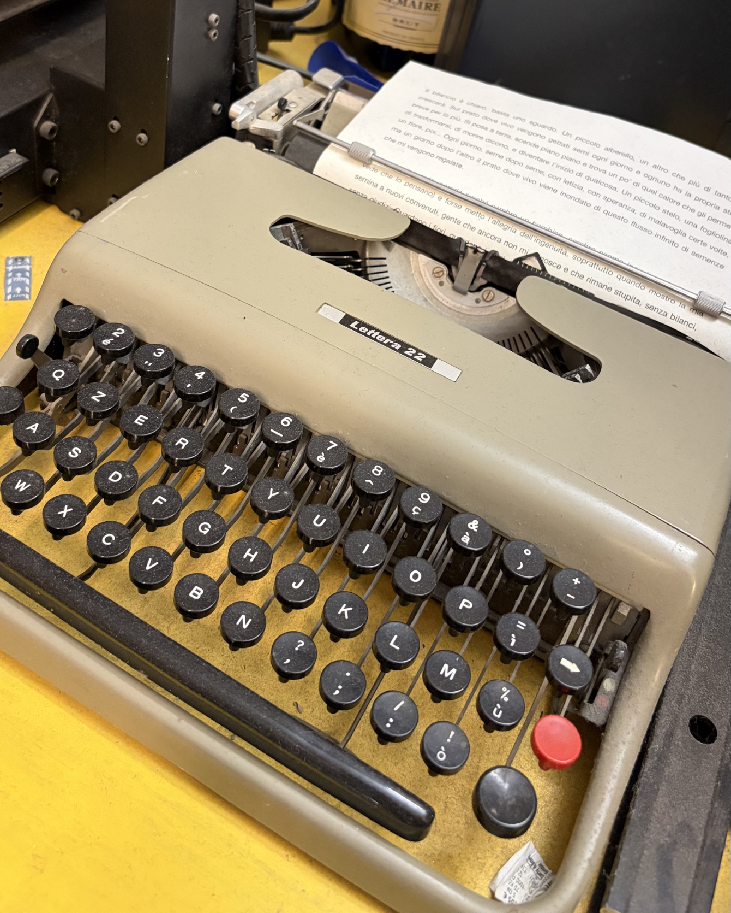
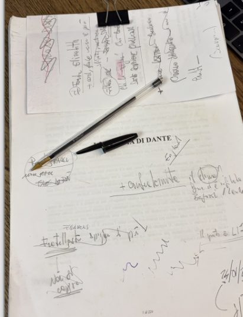
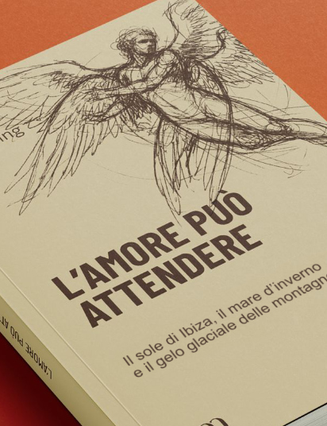
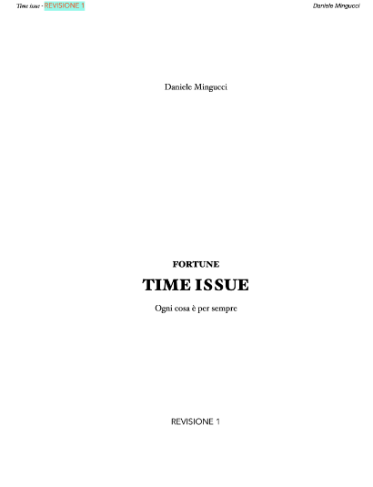
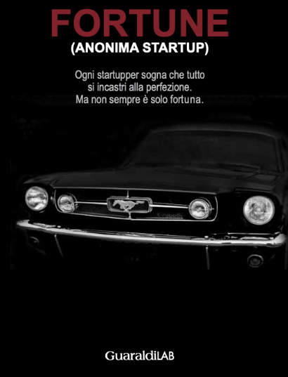
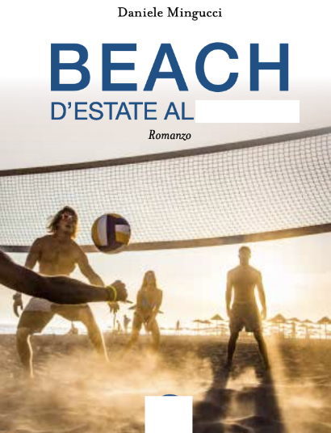
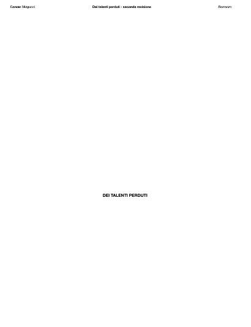

scrittura
danielemingucci



... di Dante
A questo tengo molto, è una storia d'amore. Tre storie d'amore, quattro...
Mi sto mettendo alla prova, come scrittura, e sto rifinendo tanto, come non ho mai fatto. Avrei voluto finire tutto in agosto 2026, ma quella dannata barca :)))
Il titolo non lo svelo ancora, è troppo bello.
Romanzo, 2026 · 512.000 battute


L'amore può attendere
Acquista su Amazon →

Fortune 2 - time issue
È il due di Fortune. Tutta un'altra storia. Ho cambiato stile, al presente. Spero di essere migliorato. Credo sia pronto per la pubblicazione, ma Guaraldi Lab non c'è più, non c'è più Mario, il mio primo editore.
Rimane in cantina un po', poi vediamo. Probabilmente serve un'altra revisione. Ah... secondo l'AI la startup che c'è dentro si può fare.
Quasi quasi...
Romanzo, 2024 · 625.000 battute

Fortune - anonima startup
Acquista su Amazon →

Beach - D'estate al...
Me l'ha fatto scrivere e poi non l'ha voluto pubblicare. E dire che spacca... Prima o poi lo pubblico lo stesso, prima però gli diamo una sistemata.
Racconta di come è arrivato il Beach Volley in Europa. Una storia romanzata, costruita su diversi piani temporali, alla scoperta di un tesoro sepolto e del segreto - bello - di un'energia creativa indomabile.
Forse non se lo merita, il committente. Ma mia mamma dice che è bellissimo :).
Romanzo, 2019 · 340.000 battute

Dei talenti perduti
Una storia strana, dark. Di rinascita. È in bozza da un po', si chiamava "Il bar dei talenti perduti" ma somiglia troppo ad altri titoli. Ci devo pensare ancora.
Secondo Gemini e Claude è il mio migliore, ma non l'ho ancora preparato per la pubblicazione. Intanto aspettiamo, è lì.
Il cattivo è un mio amico, si chiama come lui. Il buono era un mio amico, abbiamo litigato, mi raccontava un sacco di balle. Infatti è andata esattamente al contrario...
Romanzo, 2020 · 265.000 battute